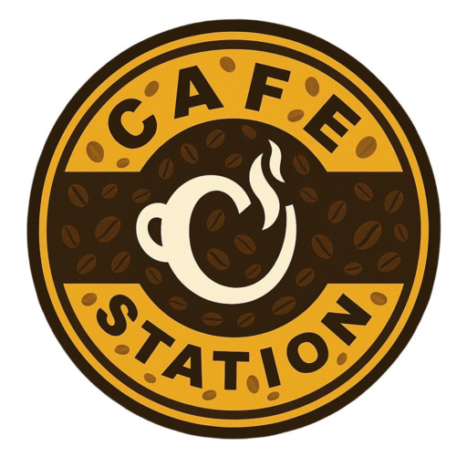
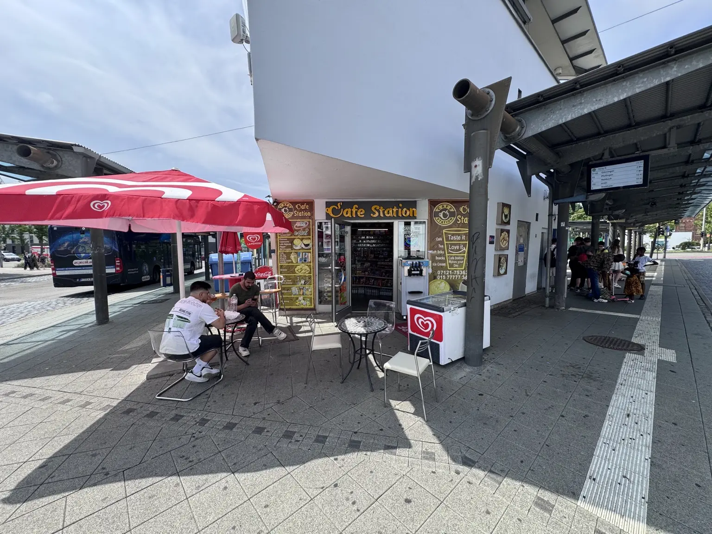
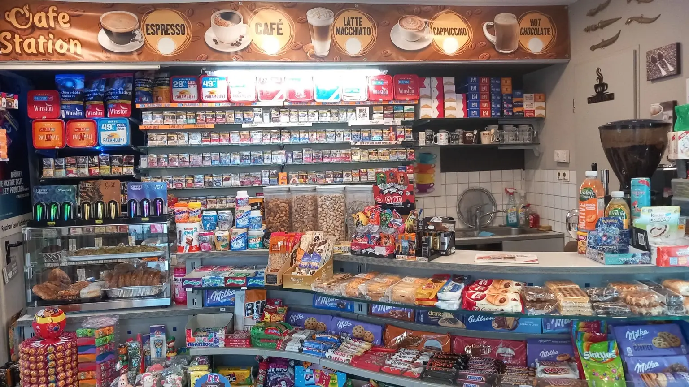

Frisch gemahlen

Café StationReutlingen Anrufen
Direkt am Bahnhof Reutlingen
Dein Kaffee.Deine Station.
Frisch, unkompliziert und genau dann da, wenn du ihn brauchst – montags bis freitags schon ab 06:00 Uhr.
01 / UNSER KAFFEE
Vom ersten Duft
bis zum letzten Schluck.
Kaffee ist bei uns kein Nebendarsteller. Er ist der Moment zwischen Ankommen und Weiterfahren – heiß, frisch und ohne Umwege.
Die Bohne
9 Bar Druck
Präzision,
die man schmeckt.
Perfekte Crema
Heiß. Samtig.
Bereit für dich.
Scrollen, um den Espresso zu starten.

06:00Frühstart
Mo–Fr
Mo–Fr
03 / DIE STATION
Mitten im Weg.
Genau richtig.
Ob vor der Arbeit, zwischen zwei Verbindungen oder einfach auf eine Tasse zwischendurch: Du findest uns am Willy-Brandt-Platz 25 – direkt dort, wo Reutlingen ankommt und weiterfährt.
Mo–Fr06–21 Uhr
Sa–So14–21 Uhr
04 / EIN BLICK REIN
Klein in der Fläche.
Groß in der Auswahl.
21 Sek. · Rundgang

05 / MEHR ALS KAFFEE
Alles für unterwegs.
Kalte Getränke
Erfrischung für unterwegs – direkt aus der Kühlung.
Snacks & Süßes
Kleine Stärkung, Gebäck und etwas für zwischendurch.
Tabak & E-Zigaretten
Auswahl für Erwachsene. Verkauf ausschließlich ab 18 Jahren.
Dein nächster Kaffee wartet
Bis gleich
an der Station.
AdresseWilly-Brandt-Platz 25
72764 Reutlingen
72764 Reutlingen
ÖffnungszeitenMo–Fr: 06–21 Uhr
Sa–So: 14–21 Uhr
Sa–So: 14–21 Uhr
Telefon0171 217 53 89 85